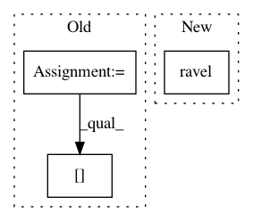

e3a249cd2de8b2518470021db0f579e26cafbfba,aif360/sklearn/inprocessing/adversarial_debiasing.py,AdversarialDebiasing,decision_function,#AdversarialDebiasing#,185
Before Change
n_samples = X.shape[0]
groups, _ = check_groups(X, self.prot_attr_)
le = LabelEncoder().fit(self.groups_)
groups = le.transform(groups)
samples_covered = 0
scores = np.empty((n_samples, len(self.classes_)))
while samples_covered < n_samples:
start = samples_covered
end = samples_covered + self.batch_size
if end > n_samples:
end = n_samples
batch_ids = np.arange(start, end)
batch_features = X[batch_ids]
batch_prot_attr = groups[batch_ids]
batch_feed_dict = {self.input_ph: batch_features,
self.keep_prob: 1.0}
After Change
feed_dict=batch_feed_dict)
samples_covered += len(batch_features)
return scores.ravel() if scores.shape[1] == 1 else scores
def predict_proba(self, X):
decision = self.decision_function(X)
In pattern: SUPERPATTERN
Frequency: 5
Non-data size: 3
Instances
Project Name: IBM/AIF360
Commit Name: e3a249cd2de8b2518470021db0f579e26cafbfba
Time: 2020-02-19
Author: hoffman.sc@gmail.com
File Name: aif360/sklearn/inprocessing/adversarial_debiasing.py
Class Name: AdversarialDebiasing
Method Name: decision_function
Project Name: cesium-ml/cesium
Commit Name: 09bfc1b3ef8494cf17a192bbe83df576ccdac86f
Time: 2016-06-29
Author: brettnaul@gmail.com
File Name: cesium/tests/test_predict.py
Class Name:
Method Name: test_predict_classification
Project Name: cesium-ml/cesium
Commit Name: 2ab1119596b420cc696a783271d617562ccf7e28
Time: 2017-03-29
Author: brettnaul@gmail.com
File Name: cesium/featurize.py
Class Name:
Method Name: featurize_single_ts
Project Name: lmcinnes/pynndescent
Commit Name: c1c31db36facdf8d557f4dcc69866ac86814b83f
Time: 2020-09-01
Author: leland.mcinnes@gmail.com
File Name: pynndescent/pynndescent_.py
Class Name: NNDescent
Method Name: _init_search_graph
Project Name: scikit-image/scikit-image
Commit Name: b8a5e5db6c2c0ff9540d84c11c05b21fc6023ae6
Time: 2020-05-04
Author: rfezzani@gmail.com
File Name: skimage/color/colorconv.py
Class Name:
Method Name: rgba2rgb